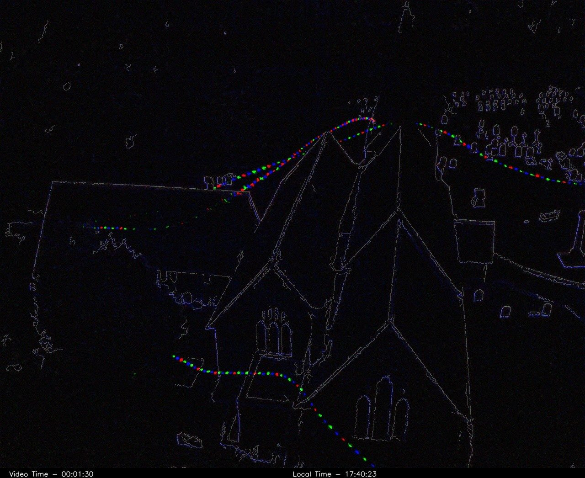

Specialist ecological survey services · East Sussex, UK
Ecology from a different perspective
Aerial Ecology provides specialist ecological survey services, combining aerial and ground-based thermal imaging, drone technology, ecological expertise and advanced GIS analysis.
We support ecological consultancies across the UK with bat emergence and re-entry surveys, thermal skylark nest detection, habitat mapping, spatial analysis and specialist ecological fieldwork. From complex buildings requiring coordinated thermal coverage to extensive grassland habitats and large-scale mapping projects, we deliver practical survey solutions and reliable, reviewable evidence.
Core services
Established survey services for consultancies
Two specialist thermal services, backed by mapping, GIS and field ecology.

Thermal bat emergence and re-entry surveys
Integrated aerial and ground-based thermal surveys, with multiple cameras deployed together on larger or complex structures. Reviewable recordings and ecological interpretation for your report.
Bat survey service →
Thermal skylark nest detection surveys
A two-stage thermal drone survey, night-time detection then early-morning review, that focuses nest searches ahead of targeted ground verification.
Skylark survey service →All services
Specialist support, built around your team
We work alongside consultancies, adding survey capacity and technical capability that fits your existing workflows and reporting.
Thermal bat surveys
Drone-mounted and ground-based thermal cameras for emergence and re-entry surveys, tailored to the structure and its surroundings.
Learn more →Skylark nest surveys
Two-stage thermal surveys that identify and prioritise potential nest locations in grassland and arable habitats.
Learn more →Habitat mapping & BNG support
High-resolution aerial imagery and accurate spatial outputs that support field habitat surveys and BNG assessments.
Learn more →GIS & spatial analysis
Habitat suitability modelling, spatial analysis and clear visual outputs for reporting and design.
Learn more →LiDAR & 3D models
Terrain, canopy and structure captured in 3D to show habitat context and site constraints.
Learn more →Protected species support
Bat sound analysis, survey design, report writing, technical review and Ecological Clerk of Works (ECoW) for bats.
Learn more →Aerial and ground-based thermal
Coverage tailored to the structure
Aerial thermal cameras give viewpoints that ground positions can't: high roofs, chimneys, dormers and hidden elevations. Ground-based thermal cameras provide continuous coverage of selected areas.
- Coordinated coverage with multiple thermal systems on larger or complex structures
- Reviewable evidence: thermal recordings that can be checked, shared and audited
- Ecological expertise first: cameras support experienced surveyors and professional survey standards, and don't replace them
How we work
From brief to deliverables
Scope
We review the site, species and survey guidance with you and agree what thermal or aerial methods add.
Plan
Flight planning, risk assessment, and camera and surveyor positions.
Survey
Aerial and ground teams work together on site at the right time of day and season.
Analyse
Recordings and data are reviewed, interpreted and mapped in GIS.
Deliver
Recordings, clips, maps and a clear write-up that fits your report.

Built for real sites
The right kit for difficult ground
We combine thermal drones, LiDAR and ground-based equipment to deliver reliable data in challenging environments.
Our approach is designed for complex structures, restricted-access sites and situations where standard survey methods are limited.
- DJI Matrice thermal drone platforms
- Ground-based thermal cameras for continuous coverage
- LiDAR-enabled survey drones
Technical demonstration
Explore a river corridor in 3D
An interactive 3D reconstruction built from drone survey data, capturing habitat structure, terrain and landscape context. Models like this help explain complex sites quickly and communicate constraints clearly.
Planning a survey?
Clear ecological data for complex sites
Tell us about the site, the species and your timeline. We'll suggest a survey approach.